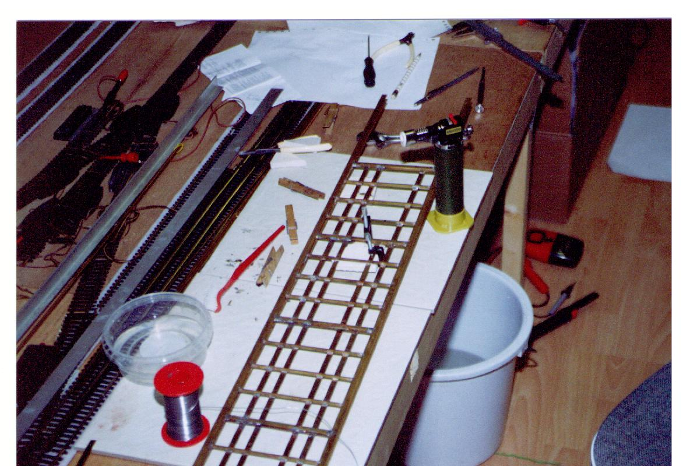
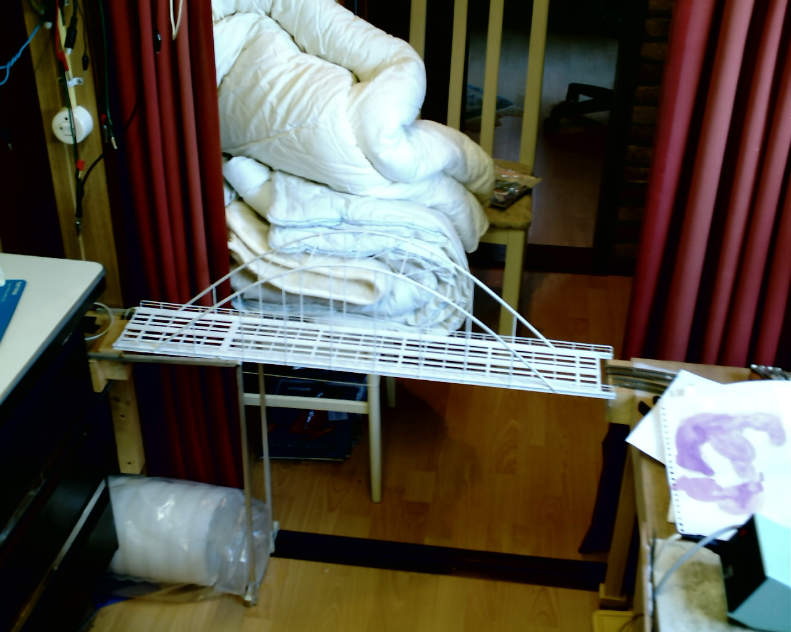
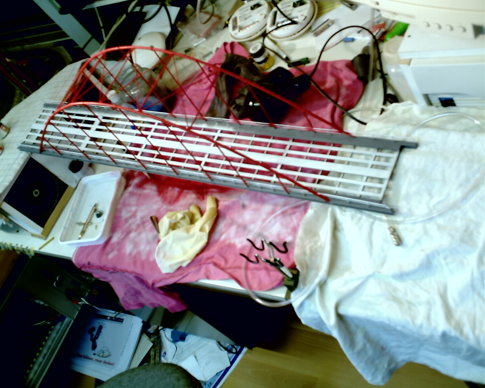
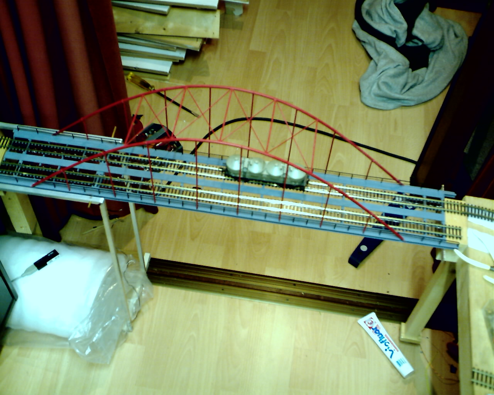
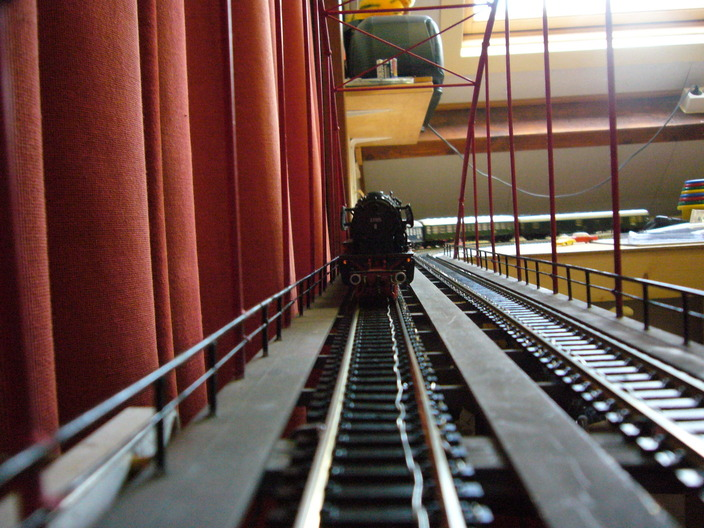
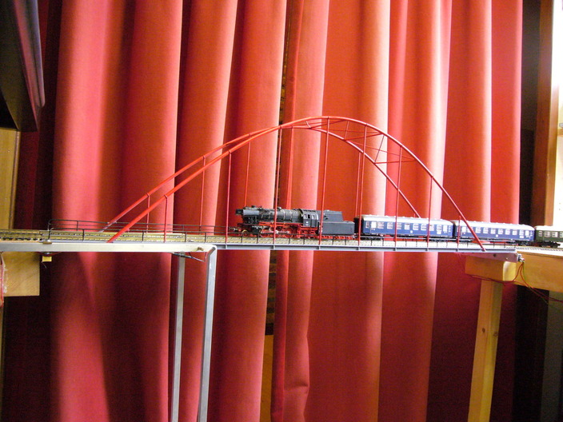

My track runs arround the walls of the room. So in order to get into the room I needed to cross the track. This was a nice opportunity to build a bridge that can open. In order to bridge the 90 cm gap I needed a classic arch bridge (. Those kind of bridges can not open. On the other hand I do not know of bridges that can open for a length of 78m. Even the Van Brienenoordbrug opens 'only' for 53m and that is to let sea ships passby. So a total length of opening of 78m would be unralistic. So I decided to make a fixed bridge that I can open if I want to pass.
Here is a foto while soldering the track holders:

Trying to fit in the bridge and the holders to open the bridge:

Airbrushing the final colors:

And finally the first part of the track:

Now we are ready, and my steamtrain is getting on the bridge:

Here the same train from the side:
